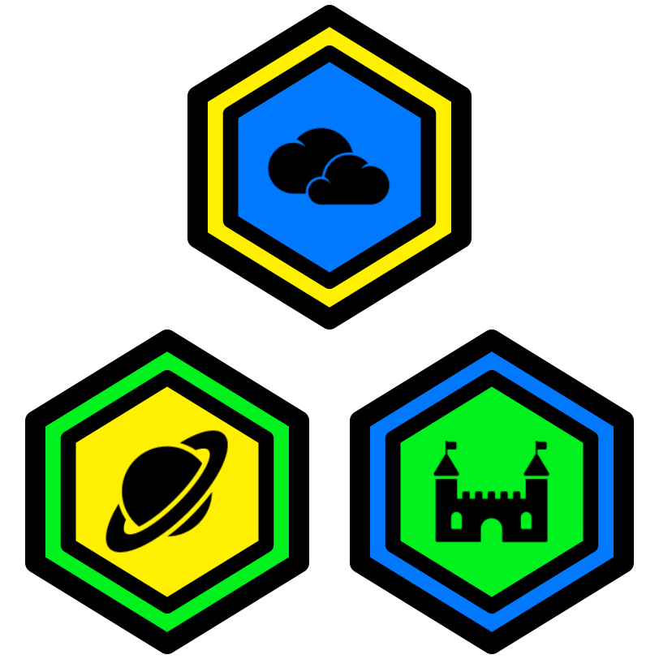

1 Intro Katas
1.1 Code Of Awesomeness 1 Kata
1.2 Code Of Awesomeness 2 Kata
1.3 Code Of Awesomeness 3 Kata
1.4 Hello World 000 Kata
2 Collect Katas
2.1 Clicker Collect 001 Kata
2.2 Clicker Collect 002 Kata
2.3 Clicker Collect 003 Kata
2.4 Clicker Collect 004 Kata
3 More Collect Katas
3.1 Clicker Collect 005 Kata
3.2 Clicker Collect 006 Kata
3.3 Clicker Collect 007 Kata
3.4 Clicker Collect 008 Kata
3.5 Clicker Collect 009 Kata
4 Avoid Katas
4.1 Clicker Avoid 001 Kata
4.2 Clicker Avoid 002 Kata
4.3 Clicker Avoid 003 Kata
4.4 Clicker Avoid 004 Kata
4.5 Clicker Avoid 005 Kata
5 More Avoid Katas
5.1 Clicker Avoid 006 Kata
5.2 Clicker Avoid 007 Kata
5.3 Clicker Avoid 008 Kata
5.4 Clicker Avoid 009 Kata
5.5 Clicker Avoid 010 Kata
6 Special Katas
6.1 Clicker Special 001 Kata
6.2 Clicker Special 002 Kata
6.3 Clicker Special 003 Kata
6.4 Clicker Special 004 Kata
6.5 Clicker Special 005 Kata
7 Bonus Katas
7.1 Clicker Special 006 Kata
7.2 Clicker Special 007 Kata
7.3 Clicker Special 008 Kata
7.4 Clicker Special 009 Kata
8 Game Show
8.1 Monday
8.2 Tuesday
8.3 Wednesday
8.4 Thursday